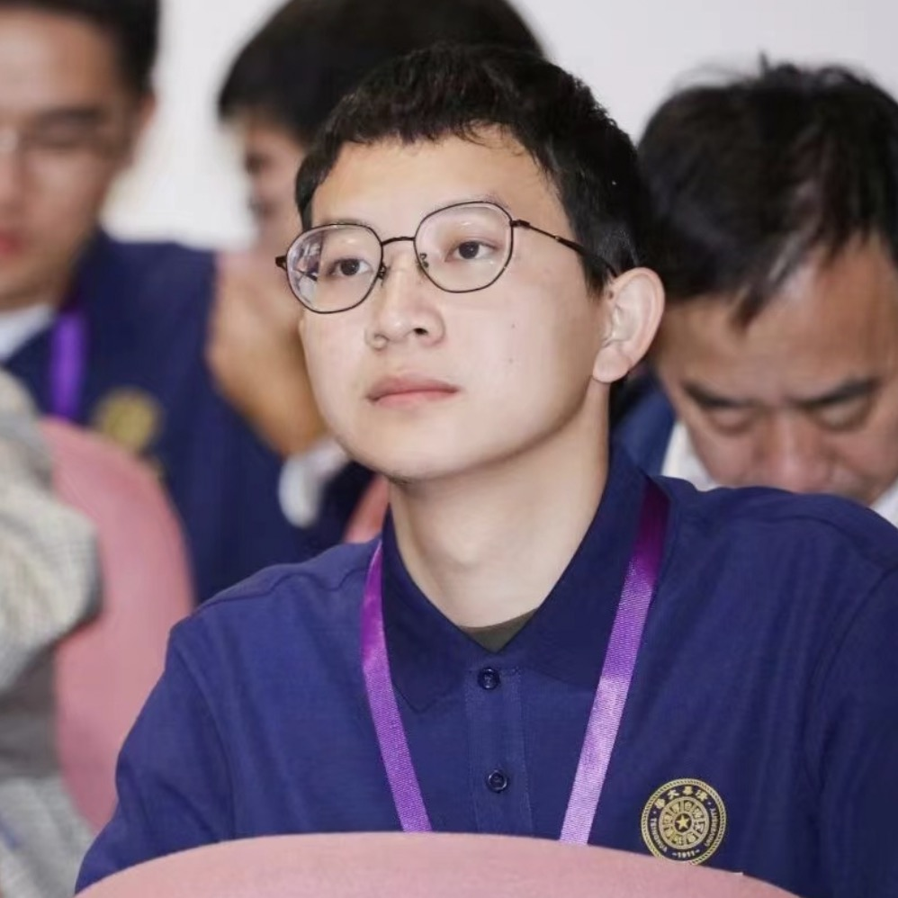

|  |
Liangcai Su (苏良才) |
I am a second-year master student at Tsinghua University, majoring in Computer Technology. Previously, I recieved B.Eng degree in Software Engineering from Xidian University in 2021. I was a research intern at Huawei Noah's Ark Lab supervised by Jieming Zhu. Now, I am a research intern at Tencent mentored by Junwei Pan and Ximei Wang.
My research directions are data mining and recommender systems. During my M.Sc., I mainly focused on industrial recommender systems. For example,
Efficient Candidate Matching
Multi-scenario/Multi-task/Multi-modal CTR Prediction
Re-ranking Based on User Behavior Sequence
STEM: Unleashing the Power of Embeddings for Multi-task Recommendation.
Liangcai Su*, Junwei Pan*, Ximei Wang, Xi Xiao, Shijie Quan, Xihua Chen, Jie Jiang.
AAAI 2024. [Arxiv]
Beyond Two-Tower Matching: Learning Sparse Retrievable Interaction Models for Recommendation.
Liangcai Su, Fan Yan, Jieming Zhu, Xi Xiao, Haoyi Duan, Zhou Zhao, Zhenhua Dong and Ruiming Tang
SIGIR 2023. [Paper]
FinalMLP: An Enhanced Two-Stream MLP Model for CTR Prediction.
Kelong Mao, Jieming Zhu, Liangcai Su, Guohao Cai, Yuru Li, Zhenhua Dong.
AAAI 2023. [Paper] [Code]
BARS: Towards Open Benchmarking for Recommender Systems.
Jieming Zhu, Quanyu Dai, Liangcai Su, Rong Ma, Jinyang Liu, Guohao Cai, Xi Xiao, Rui Zhang.
SIGIR 2022. [Paper] [Code] [Project]
PEAR: Personalized Re-ranking with Contextualized Transformer for Recommendation
Yi Li, Jieming Zhu, Weiwen Liu, Liangcai Su, Guohao Cai, Qi Zhang, Ruiming Tang, Xi Xiao, Xiuqiang He.
WWW 2022. [Paper]